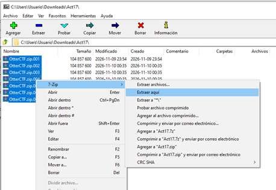
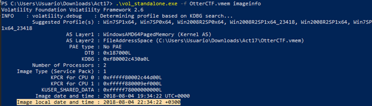
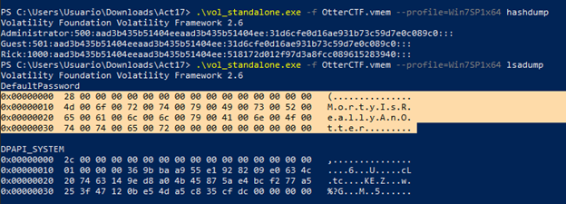
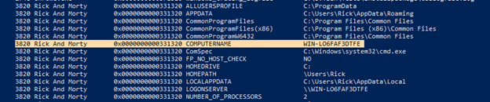
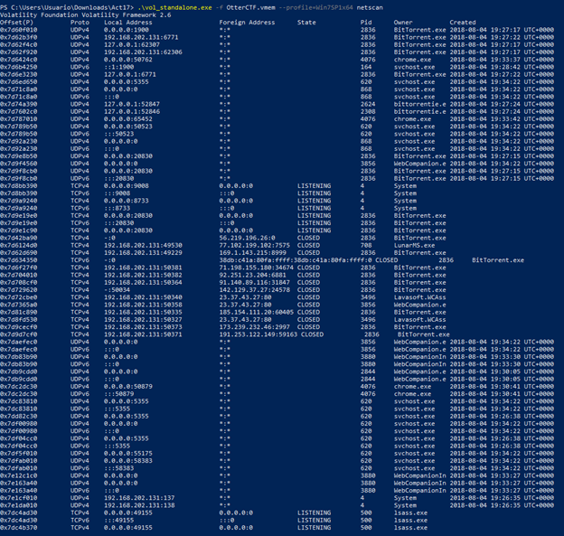
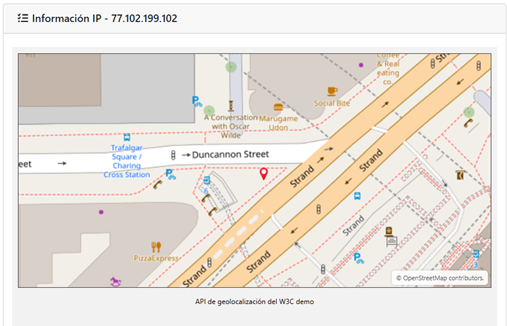
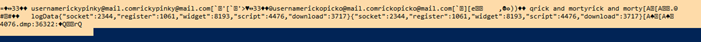
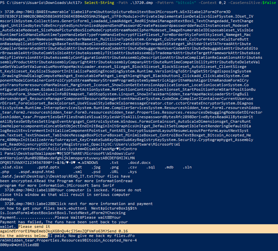

Ficha Técnica
Actividad 17: La memoria del crimen
Extracción de evidencia de un volcado RAM. Práctica avanzada de análisis forense digital centrada en la correlación de artefactos volátiles, descubrimiento de contraseñas, análisis de red y desmantelamiento de infraestructura delictiva utilizando Volatility.
Software: Volatility Framework 2.6 (Standalone), 7-Zip, PowerShell
Evidencia: Archivo de imagen de memoria (OtterCTF.vmem)
Perfil: Cibercriminal alias "Morty" (redes botnet, ransomware, OSINT).
Objetivo: Extraer credenciales, IPs de comando y control (C2), artefactos de Chrome y carteras BTC vinculadas a extorsión.
Preparación
Despliegue del Entorno de Análisis
La muestra fue proporcionada en un archivo comprimido multivolumen para preservar su integridad durante la transferencia.

>_ Evidencia 01: Extracción del archivo OtterCTF.vmem utilizando 7-Zip.
Se descargó la herramienta de código abierto Volatility (versión 2.6 Standalone para Windows) y se alojó en el mismo directorio de trabajo que la evidencia para iniciar las consultas forenses mediante línea de comandos (CLI).
Investigación
1. Perfilado de la Evidencia (imageinfo)
El primer paso en el análisis de memoria volátil consiste en identificar la estructura del sistema operativo para que la herramienta pueda procesar correctamente los bloques de memoria (estructuras EPROCESS, KDBG).
Suggested Profile(s) : Win7SP1x64
Image local date and time : 2018-08-04 22:34:22 +0300
La marca de tiempo permite crear una línea de tiempo (timeline) para correlacionar la actividad del cibercriminal. Todo proceso en ejecución o conexión de red activa en el volcado refleja exactamente lo que sucedía el 4 de agosto de 2018. El perfil base a utilizar en los siguientes comandos será Win7SP1x64.

>_ Evidencia 02: Determinación del perfil del SO y fecha de captura.
2. Descubrimiento de Credenciales (hashdump & lsadump)
Se requiere localizar la contraseña en texto plano del perfil del atacante, ya que la sesión se encontraba activa al momento del volcado.
Rick:1000:aad3b435b51404eeaad3b435b51404ee:518172d012f97d3a8fcc089615283940:::
.\vol_standalone.exe -f OtterCTF.vmem --profile=Win7SP1x64 lsadump
DefaultPassword
0x00000010 4d 00 6f 00 72 00 74 00 79 00 49 00 73 00 52 00 M.o.r.t.y.I.s.R.
0x00000020 65 00 61 00 6c 00 6c 00 79 00 41 00 6e 00 4f 00 e.a.l.l.y.A.n.O.
0x00000030 74 00 74 00 65 00 72 00 00 00 00 00 00 00 00 00 t.t.e.r...
El análisis revela que la cuenta del atacante ("Rick") tiene configurada una contraseña en texto plano en la memoria: MortyIsReallyAnOtter.

>_ Evidencia 03: Ejecución de lsadump mostrando la contraseña expuesta.
3. Identidad de Máquina y Registro (hivelist & envars)
Localizar el Registro del Sistema es crítico para extraer persistencia y configuraciones, mientras que las variables de entorno asocian el volcado de RAM directamente con la máquina física.
3820 Rick And Morty 0x0000000000331320 COMPUTERNAME WIN-LO6FAF3DTFE
El nombre del ordenador extraído (WIN-LO6FAF3DTFE) contiene exactamente las iniciales proporcionadas por inteligencia (FAF3 de SEDENE y TFE de CNDI), vinculando de manera irrefutable esta evidencia al caso FGM.

>_ Evidencia 04: Atribución técnica confirmando el nombre del equipo.
4. Comportamiento Malicioso (pslist & netscan)
Se cruzaron los procesos activos con las conexiones de red (IP local: 192.168.202.131) para reconstruir el comportamiento del sospechoso y localizar la infraestructura de Comando y Control (C2).

>_ Evidencia 05: Salida parcial de netscan detallando los puertos y binarios activos.

>_ Evidencia 06: Consulta OSINT (W3C Demo / WHOIS) confirmando el origen de la IP de control de LunarMS.
5. Extracción de Artefactos Críticos (memdump)
Para recuperar inteligencia procesable, se extrajeron los bloques de memoria cruda asignados a procesos específicos y se analizaron utilizando Expresiones Regulares (RegEx) en PowerShell.
.\vol_standalone.exe -f OtterCTF.vmem --profile=Win7SP1x64 memdump -p 4076 -D .
Select-String -Path .\4076.dmp -Pattern "\b[A-Za-z0-9._%+-]+@[A-Za-z0-9.-]+\.[A-Za-z]{2,}\b"
rickypinky@mail.com | rickopicko@mail.com
.\vol_standalone.exe -f OtterCTF.vmem --profile=Win7SP1x64 memdump -p 3720 -D .
Select-String -Path .\3720.dmp -Pattern "bitcoin" -Context 0,2 -CaseSensitive:$false
"Your Payment has failed... Send 0.16 to the address below... 1MmpEmebJkqXG8nQv4cjJSmxZQFVmFo63M"

>_ Evidencia 07: Ejecución de Regex en PowerShell sobre el volcado de Chrome para identificar correos de Mail.com.

>_ Evidencia 08: Extracción de la nota de rescate en RAM y validación forense confirmando que la cartera BTC NO figura en listas negras públicas.
Líneas de Inv.
Basado en los artefactos recuperados del volcado de memoria, se proponen las siguientes directrices estratégicas para las autoridades:
Monitorear continuamente la cartera 1MmpEmebJkqXG8nQv4cjJSmxZQFVmFo63M. Se debe trazar el flujo de transacciones salientes mediante análisis forense on-chain para detectar técnicas de lavado (tumblers/mixers) y asociar depósitos con víctimas de rescate.
Gestionar asistencia jurídica internacional (MLAT) dirigida al Reino Unido. Se requiere preservar y auditar el servidor alojado en 77.102.199.102 administrado por Virgin Media Limited, extrayendo las bases de datos de LunarMS para rescatar posibles víctimas.
Girar oficios a Mail.com para congelar la información de las cuentas rickypinky@mail.com y rickopicko@mail.com. Analizar los registros de inicio de sesión, IP, y mensajes para mapear la red de ingeniería social.